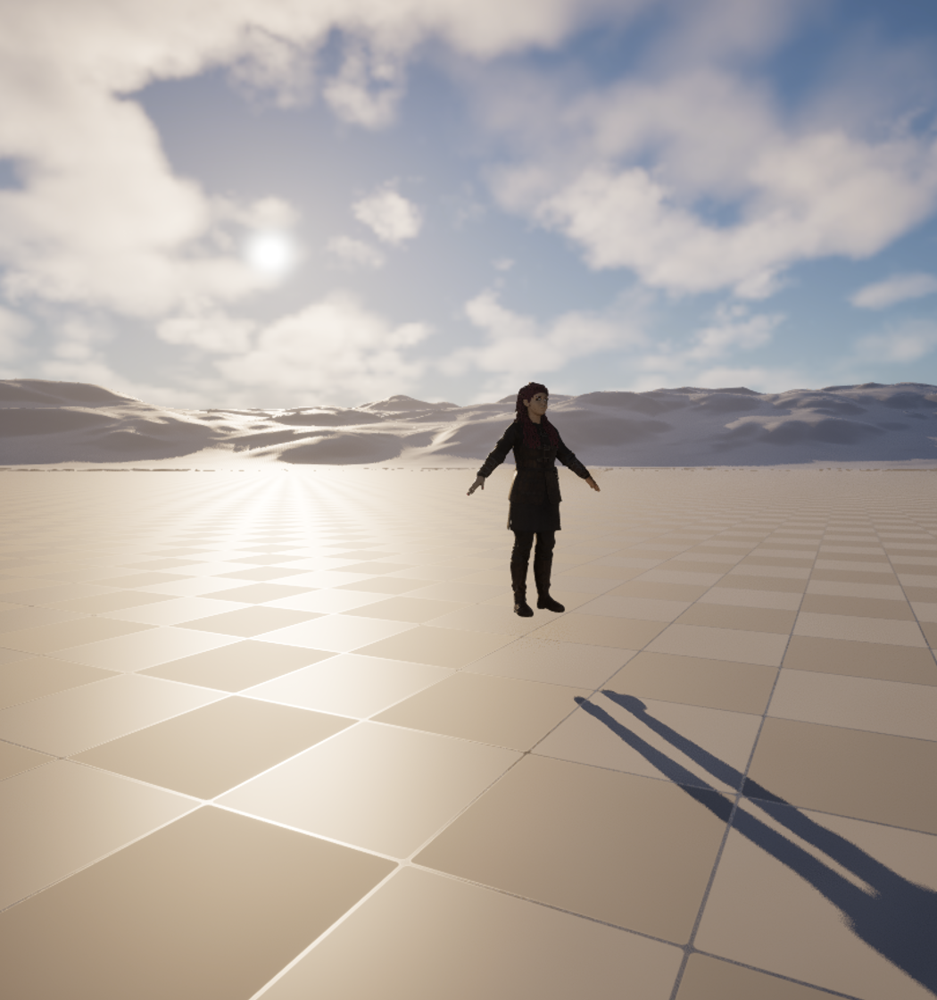

🎞 Rendering Output
You have staged a scene, pointed a Cine Camera at it, and cut between angles in Sequencer. Press play and the shot runs, but what you are watching is a real-time approximation the editor draws fast enough to stay interactive. It is not the finished film. Turning that preview into clean, delivery-quality frames is a separate, deliberate step, and it has its own tool: the Movie Render Queue. In this lesson you will learn why the viewport is only a preview, how MRQ render jobs and settings are organized, how spatial and temporal anti-aliasing samples and warm-up frames turn a noisy image into a smooth one, the difference between the deferred renderer and path tracing, and why you output an image sequence rather than a single video file.
🎬 Intermediate Track
This is the third and final lesson of the Cinematic Production track. It follows directly from Cinematics with Sequencer: that lesson ended with a shot that existed only as an editor preview, and this one turns that Level Sequence into finished frames. It is the exact ground the Phase 7 Output pipeline page assumes you already know.
🎯 Learning Objectives
By the end of this lesson, you will be able to:
- Explain why an editor viewport preview is not a final render, and what the Movie Render Queue adds
- Set up an MRQ render job and read its output settings: format, resolution, frame range, and output directory
- Describe how spatial and temporal anti-aliasing sample counts combine, and why warm-up frames are needed
- Compare the deferred renderer with path tracing and choose the right one for a shot
- Output an image sequence (PNG or EXR) and describe the handoff into post-production
Estimated Time: 35-45 minutes
Prerequisites: Intermediate Lesson 2: Cinematics with Sequencer (you need a Level Sequence to render), and the introductory modules (especially 4.5 Post-Process Effects and 10.2 Optimization). A working Unreal Engine 5.8 project.
In This Lesson
🖼️ A note on this lesson's figures
The figure in the next section is a genuine real-time viewport preview, the before that this whole lesson improves on. What you will not see here is a captured Movie Render Queue frame or a path-traced frame, and that is deliberate: MRQ produces its output through a dedicated offline pipeline that writes files to disk rather than to the screen, so a live-viewport grab literally cannot stand in for one without misrepresenting a preview as a finished render. The renderer and sampling concepts are therefore taught with precise labeled diagrams. Everything they describe is exactly what you will see in the MRQ window in your own project.
From Preview to Deliverable
The editor viewport has one overriding job: stay responsive. To keep the frame rate high enough to work with, it takes shortcuts. Edges get an approximate, single-pass smoothing; motion blur and depth of field are rough; effects that build up over several frames never fully settle because the camera keeps moving. That is exactly what you want while you block and time a shot, and exactly what you do not want in a deliverable.

Figure: A real-time editor viewport preview · the same SK_Anya character from Lesson 1, staged on a working plane in the ClaudeTest project. This is the fast, interactive approximation you compose and time against, not a final render · the Movie Render Queue re-renders this same scene with full sampling to produce the clean deliverable.
Rendering is the separate step that spends the time the viewport could not. Instead of drawing each frame once in a few milliseconds, the renderer draws each output frame many times over, accumulating those passes into one clean image, and writes it to disk. The tool that orchestrates this in Unreal is the Movie Render Queue.
📖 Definition
Movie Render Queue (MRQ): Unreal's high-quality offline renderer. You hand it one or more Level Sequences as render jobs, attach settings that control quality and output, and it renders each frame with full anti-aliasing, correct motion blur, and resolved effects, then saves the result as an image sequence or video. It is the correct and only path to final frames.
💡 Where this sits in the pipeline
In the Story-to-Screen pipeline, this is the output stage: the shot is assembled, and now Unreal produces the frames that leave the engine and enter post. The Phase 7 Output page maps this handoff, and its headline is the same as this lesson's: final frames come from the Movie Render Queue, never the viewport.
💡 Preview and final are two different passes
flowchart LR
SEQ[Level Sequence
from Lesson 2] --> PV[Editor preview
real-time approximation]
SEQ --> MRQ[Movie Render Queue
offline render]
PV --> BT[blocking & timing
fast, rough]
MRQ --> FR[final frames
clean, on disk]
FR --> POST[into post]
style PV fill:#fff3cd,stroke:#ffc107
style MRQ fill:#ede7f6,stroke:#7e57c2
style FR fill:#e8f5e9,stroke:#4CAF50
The same Level Sequence feeds both. The preview is for your eyes while you work; the Movie Render Queue is for the audience.
The Movie Render Queue: Jobs and Settings
You open the Movie Render Queue from the Cinematics menu in the toolbar (Window then Cinematics then Movie Render Queue, or the Render button in Sequencer). The window is a queue: a list of render jobs, where each job is one Level Sequence you want rendered. You can line up several jobs and render them in a batch, which is how a whole sequence of shots gets rendered overnight.
Each job carries a settings configuration, and this is where quality and output are decided. The settings are grouped into modular entries you add to the job. Four groups matter most when you start:
The settings that shape a render
- Output. Where and how big: the output directory, the file name pattern, the resolution (for example 1920x1080 or 3840x2160), and the frame rate. The frame range comes from the sequence's playback range by default.
- Image format. What kind of file each frame becomes: a PNG, JPG, or BMP image, an EXR image, or a video file. This is covered in detail in Section 5.
- Anti-Aliasing. The sample counts that determine how clean each frame is, plus the warm-up settings. This is Section 3.
- Rendering feature settings. Optional toggles such as the Path Tracer, high-quality shadows, or extra render passes. Path tracing is Section 4.
Figure: A Movie Render Queue job. The queue (left) lists sequences to render; each job carries a settings stack (right) for output, image format, anti-aliasing, and rendering features · jobs render top to bottom when you press Render.
✅ Pro Tip: save your settings as a preset
Once you have a settings stack you like (resolution, format, sample counts, warm-up), save it as a preset. Every future job can load that preset in one click, so your whole project renders with consistent quality and you never re-type sample counts shot by shot.
Anti-Aliasing: Spatial and Temporal Samples
Aliasing is the stair-stepping you see on a diagonal edge, and the shimmer on fine detail, when a single sample per pixel cannot decide whether that pixel is foreground or background. The fix is to sample each pixel many times at slightly different positions and average the results, so the edge becomes a smooth gradient. The Movie Render Queue does this by rendering each output frame several times over and accumulating the passes. It exposes that budget as two multiplied numbers.
📖 Definition
Spatial samples render the frame multiple times at a single instant, each jittered by a fraction of a pixel, to smooth edges (spatial anti-aliasing). Temporal samples render the frame at several sub-steps across the frame's shutter interval and accumulate them, which builds accurate motion blur and averages out time-varying noise. The total renders accumulated into one output frame is spatial × temporal.
So a job with 8 temporal samples and 4 spatial samples renders and blends 32 internal passes for every single frame you get out. More samples mean a cleaner image and a longer render. The split between the two matters: spatial samples clean up static edges, and temporal samples clean up anything that moves and produce the smooth motion blur that reads as filmic.
Figure: The Movie Render Queue renders each output frame as spatial samples (sub-pixel jitter, for edges) times temporal samples (sub-frame time steps, for motion blur), then accumulates them into one resolved frame · 8 temporal × 4 spatial is 32 internal passes per frame.
Warm-up frames: letting the image settle first
Some parts of the image are not correct on the very first frame. Automatic exposure (eye adaptation) drifts toward its target brightness over time, temporal effects such as Temporal Super Resolution and screen-space reflections build a history across frames, and hair, particles, and physics need a moment to reach a steady state. If MRQ recorded frame 0 cold, that frame would look wrong: too bright or dark, or noisier than the frames after it.
Warm-up frames solve this. Before recording the first output frame, MRQ advances the engine through a number of frames so all of those time-dependent systems converge. There are two related controls: an engine warm-up count that ticks the world without rendering (good for letting gameplay and physics settle), and a render warm-up that actually renders throwaway frames so the GPU-side temporal history is built up before frame 0 is saved.
⚠️ The classic first-frame flicker
If your render starts too bright and then darkens over the first second, or the opening frames look grainy and then clean up, you almost certainly need more warm-up frames. This is eye adaptation and temporal history catching up. Raising the warm-up count so those systems settle before frame 0 removes the flicker.
Deferred Renderer vs Path Tracing
Anti-aliasing decides how cleanly a frame is sampled. A separate choice decides how the light in that frame is actually computed. The Movie Render Queue can render with either of two engines, and they make fundamentally different trade-offs between speed and physical accuracy.
📖 Two ways to compute light
The deferred renderer is Unreal's default, real-time-derived path. It rasterizes the scene into buffers of surface data (color, normal, roughness, depth) and then computes lighting from those buffers, using fast, high-quality approximations such as Lumen global illumination and screen-space reflections. Path tracing instead traces many light rays per pixel that bounce through the scene, converging on a physically accurate, ground-truth image. It is far slower and needs hardware ray tracing.
The deferred renderer is what every earlier lesson has been using, and with Lumen and Nanite it is fully production-capable: the vast majority of real-time cinematics ship on it. Path tracing exists for when you want a physically exact reference or a hero shot with perfect reflections, refractions, and soft shadows, and you are willing to pay for it in render time and hardware.
Figure: The deferred renderer rasterizes surface data into a G-buffer and lights it with fast approximations (Lumen, screen-space reflections); path tracing traces bouncing rays per pixel for a physically accurate but slower, hardware-ray-tracing-dependent result.
💡 Which renderer should a shot use?
flowchart TD
Q{Does the shot need
physically exact light?}
Q -->|No: most cinematics| DEF[Deferred renderer
fast, Lumen + Nanite]
Q -->|Yes: hero shot, archviz,
ground-truth reference| PT{RTX-class GPU
available?}
PT -->|Yes| USE[Path tracing
accept longer renders]
PT -->|No| DEF
style DEF fill:#eef3ff,stroke:#667eea
style USE fill:#fce4ec,stroke:#e91e63
Most shots stay on the deferred renderer, which with Lumen and Nanite is production quality. Reach for path tracing only when a shot genuinely needs ground-truth light and you have the hardware and render time to spend.
💡 Path tracing and samples are the same idea again
Notice that path tracing also gets cleaner with more samples: its characteristic look at low sample counts is noise (grain), not the stair-stepping of aliasing, and both are cured by accumulating more samples. This is why MRQ's sample settings matter even more for path-traced renders, and why a path-traced hero frame can take minutes rather than milliseconds.
Output Formats and the Post Handoff
When MRQ finishes a frame, it writes a file. The natural instinct is to ask for a finished video file straight away, but professional pipelines almost always render an image sequence instead: one image file per frame, numbered in order, that a video editor or compositor stitches back together. Understanding why is the last piece of this lesson.
The formats you will choose between
- PNG (image sequence). Lossless, 8-bit, widely compatible. A solid default for previews and for shots that do not need heavy grading.
- JPG (image sequence). Lossy and small. Fine for quick dailies, poor for final work because it discards data.
- EXR (image sequence). The professional choice. OpenEXR stores high dynamic range, floating-point color, so highlights that blew out on screen are still recoverable, and it can hold multiple render passes in one file. This is what you hand a colorist or compositor.
- Video (a single file, such as ProRes or a movie container). Convenient for a one-off preview you want to play immediately, but it commits the whole render to one file.
💡 Why an image sequence, not a single video
flowchart LR
MRQ[Movie Render Queue] --> SEQ[EXR / PNG image sequence
frame_0001, frame_0002, ...]
SEQ --> POST[Post: grade & composite
Resolve, Nuke, After Effects]
POST --> ENC[Encode final video
H.264 / ProRes]
style SEQ fill:#e8f5e9,stroke:#4CAF50
style ENC fill:#ede7f6,stroke:#7e57c2
An image sequence is robust and flexible: if a render crashes at frame 900 you keep the first 899 and resume, the high dynamic range of EXR survives into color grading, and post tools expect sequences. You encode to a compressed video only at the very end, after the picture is finished.
This is exactly the handoff the Phase 7 Output page describes as leaving Unreal and entering post. The render is not the end of the story; it is the clean, high-quality raw material that grading, compositing, and editing are built on. That is where the Unreal half of the Story-to-Screen pipeline hands off.
A Repeatable Render Workflow
Every final render follows the same short sequence of steps. Once your Level Sequence from Lesson 2 is timed and cut, turning it into frames is mechanical.
The six steps of a render
- Finish the sequence. Confirm the playback range, camera cuts, and timing are final in Sequencer. Rendering an unfinished cut just wastes time.
- Open the Movie Render Queue and add the Level Sequence as a render job.
- Set output. Choose the directory, resolution, and frame rate, and pick an image format (EXR or PNG for final work).
- Set quality. Choose spatial and temporal sample counts, and a warm-up frame count high enough that the first frame is settled. Enable the Path Tracer only if the shot needs it.
- Render. Press Render (Local) and let MRQ write the image sequence to disk. Batch multiple jobs to render a whole scene unattended.
- Hand off to post. Take the image sequence into a grading or editing tool, finish the picture, and encode the final video.
✅ Pro Tip: test small before you commit
Before a long final render, do a cheap test pass: render a short slice of the range at low sample counts, or a single frame, to confirm the framing, exposure, and warm-up are right. Catching a wrong setting on one test frame is far better than discovering it after an overnight batch.
Hands-On: Render Your First Shot
You need only the Level Sequence you built in Lesson 2 (or any short sequence with a camera). Work through these steps to produce a real image sequence on disk.
🎬 Exercise: render a five second shot
- Open MRQ. With your sequence open, click the Render button in Sequencer (the clapperboard), or open Window then Cinematics then Movie Render Queue.
- Add the job. Your sequence should appear as a job. If not, use the plus button and pick it.
- Add settings. Click the job's settings and add an Output entry (set a folder and 1920x1080) and an Image Sequence PNG entry.
- Set anti-aliasing. Add an Anti-Aliasing entry. Try 8 temporal samples and 2 spatial samples, and set an engine warm-up count of around 30 frames.
- Render. Press Render (Local). A window shows progress frame by frame, then closes.
- Check the output. Open the folder you chose. You will find one PNG per frame, numbered in order. That numbered sequence is your deliverable.
💡 Hint: the first frames look brighter or grainier than the rest?
That is eye adaptation and temporal history settling in. Raise the warm-up frame count in the Anti-Aliasing settings so those systems reach steady state before frame 0 is recorded, then re-render. If the whole sequence looks soft or aliased, raise the spatial and temporal sample counts.
✅ Reach exercise: compare quality levels
Render one frame twice: once at 1 temporal and 1 spatial sample, and once at 8 temporal and 4 spatial. Open both. The difference in edge smoothness and motion blur, and in render time, is the entire point of anti-aliasing sampling made visible. If your GPU supports it, enable the Path Tracer and render that same frame a third time to see a physically accurate version.
Knowledge Check
Question 1
Why is the editor viewport preview not suitable as a final deliverable?
Correct answer: B · The viewport trades quality for speed so you can work interactively. The Movie Render Queue spends the extra time to fully resolve edges, motion blur, and time-dependent effects, then writes the result to disk.
Question 2
In the Movie Render Queue, how many internal render passes are accumulated into one output frame when you set 8 temporal samples and 4 spatial samples?
Correct answer: C · Total samples per frame is spatial × temporal, so 8 × 4 is 32 accumulated passes. Spatial samples (sub-pixel jitter) smooth static edges; temporal samples (sub-frame time steps) build motion blur and average out time-varying noise.
Question 3
What problem do warm-up frames solve?
Correct answer: A · Auto-exposure, temporal accumulation, hair, and physics need a few frames to settle. Warm-up frames advance the engine so they converge before frame 0, removing the classic first-frame brightness flicker or grain.
Question 4
Which statement best describes path tracing compared with the deferred renderer?
Correct answer: B · The deferred renderer rasterizes surface data and lights it with fast approximations (Lumen, screen-space reflections); it is production-proven for most cinematics. Path tracing traces bouncing rays per pixel for accurate light transport, at the cost of render time and needing an RTX-class GPU.
Question 5
Why do professional pipelines usually render an EXR or PNG image sequence rather than a single video file?
Correct answer: C · One file per frame means a crash keeps the frames already done, EXR keeps floating-point HDR color that survives grading, and compositors expect numbered sequences. The compressed video is produced last, after the picture is finished in post.
Summary
You closed the loop from a live scene to files a colorist can open. Here is the arc:
Preview is not final. The viewport is a fast approximation for blocking and timing. Finished frames come from the Movie Render Queue, which renders offline and writes to disk. It is the one correct output path.
Jobs and settings. MRQ is a queue of render jobs, one per Level Sequence, each carrying settings for output (directory, resolution, frame rate), image format, anti-aliasing, and rendering features. Save a settings preset for consistency across a project.
Sampling and warm-up. Each output frame is spatial samples times temporal samples, accumulated into one clean image: spatial for edges, temporal for motion blur. Warm-up frames let time-dependent systems settle before frame 0 so the render does not flicker.
Renderer and output. The deferred renderer is fast and production-proven; path tracing is slower but physically accurate and needs ray-tracing hardware. Final work is rendered as an EXR or PNG image sequence, which hands off cleanly into post before being encoded to video.
🔑 Key Takeaways
- Final frames come from the Movie Render Queue, never a viewport screenshot; MRQ renders offline and writes files
- An MRQ queue holds render jobs (one per sequence), each with settings for output, image format, anti-aliasing, and features
- Each frame accumulates spatial × temporal samples: spatial smooths edges, temporal builds motion blur; more samples mean cleaner but slower
- Warm-up frames let eye adaptation and temporal history settle before frame 0, removing first-frame flicker and grain
- The deferred renderer is fast with approximations; path tracing is accurate but slow and needs ray-tracing hardware
- Render an EXR or PNG image sequence for robustness and high dynamic range, then encode to video in post
Where this goes next
That completes the Cinematic Production track. You can now put a moving character on screen (Lesson 1), direct and cut a shot with Sequencer and a Cine Camera (Lesson 2), and render that shot to finished frames with the Movie Render Queue (this lesson). Together these are the Unreal half of the full Story-to-Screen pipeline: the assembled shot leaves the engine as an image sequence and enters post, mapped by the Phase 7 Output page. From here, the neighbouring craft lessons on post-process effects and quality settings deepen the look of every frame you render.